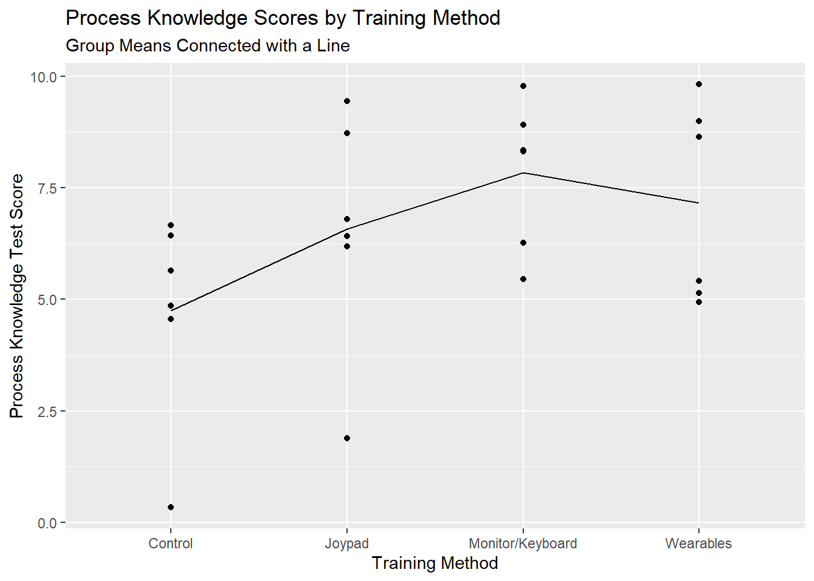
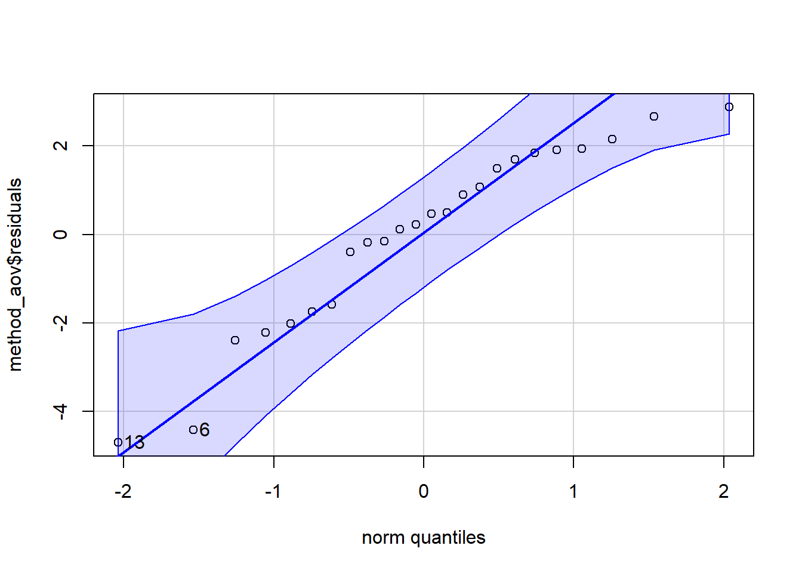

In a basic one-way factorial design (BF[1]), only one factor is purposefully varied.1 Each experimental unit is assigned to exactly one factor level. (In the case of an observational study, only one independent factor is under consideration.)
Factor Structure
The factor structure for the model resulting from a completely randomized, one factor design is:
Figure 1: Example of BF1 Factor Structure
Figure 1 illustrates a factor with 4 levels, 6 replications at each level.
Hypothesis and Model
A more detailed description of the model for an ANOVA with just one factor:
\[
y_{ij} = \mu + \alpha_i + \epsilon_{ij}
\]
\(y_{ij}\): the \(j^{th}\) observation from factor level \(i\)
\(\mu\): the grand mean of the data set.
\(\alpha_i\): effect of factor level \(i\)
\(\epsilon_{ij}\): the error term, or residual term of the model. There are j replicates for each treatment. It represents the distance from an observation to its factor level mean (or predicted value).
The null and alternative hypotheses can be expressed as:
\[
H_o: \alpha_1 = \alpha_2 = ... = 0
\]
\[
H_a: \alpha_i \neq 0 \quad \text{for at least one }\ \alpha_i
\]
Assumptions
A one-way ANOVA model may be used to analyze data from a BF[1] design if the following requirements are satisfied:
Requirements
Method for Checking
What You Hope to See
Constant variance across factor levels
Rule of thumb comparing standard deviations
\(max(s) < 2*min(s)\)
Residual vs. Fitted Plot
No major disparity in vertical spread of point groupings
Levene’s Test
Fail to reject \(H_0\)
Normally Distributed Residuals
Normal Q-Q plot
Straight line, majority of points in boundaries
Independent residuals
Order plot
No pattern/trend
Familiarity with/critical thinking about the experiment
No potential source for bias
Design
In a one factor design, one factor is purposely varied and all other factors are controlled in order to isolate the effect of just the factor under study. Each level of the factor is considered a treatment.
In a completely randomized design, each experimental unit is randomly assigned to exactly 1 factor level. In this example we expect a balanced design (i.e. each factor level has the same number of observations) because the number of observations is a perfect multiple of the number of factor levels. To make random assignments, start by listing all the subjects, then listing the treatments, as seen below:
Subject
Treatment
Order
Subject 1
A
1
Subject 2
A
2
Subject 3
B
3
Subject 4
B
4
Subject 5
C
5
Subject 6
C
6
Then you randomly shuffle the treatment column. (You should also be paying attention to the order in which subjects and treatments are being experimented on as this could be a potential source of bias. In a BF[1], if it makes sense to do, you randomize the order also.) The result might look something like this.
Subject
Treatment
Order
Subject 1
A
4
Subject 2
B
3
Subject 3
C
6
Subject 4
C
5
Subject 5
A
1
Subject 6
B
2
Note
You may notice in the above example that, even with randomization, treatment C occurs in the last 2 observations. If we were truly concerned about the order we could be more strategic and implement a blocked design to prevent “unlucky” ordering and pairing.
The design above is laid out in “longer format”. In “longer format”, each row represents an observation. There is a column to indicate what treatment experimental unit received, a column to contain the value of the response variable, and (if necessary) a column to keep track of the order in which the observations are made. “Longer format” is what many softwares need, R included.
“Wider format” is how the design is laid out in the factor structure diagram. Each factor level has it’s own column. Each cell contains a response value for a particular subject. The order of the experimental runs becomes difficult to track/document in this format. This data format is often used for data collection and is often easier for humans (as opposed to machines) to digest. In “wider format” the above table would look like the following:
Wider Format Example
Treatment A
Treatment B
Treatment C
Response for subject 5
Response for subject 6
Response for subject 3
Response for subject 1
Response for subject 2
Response for subject 3
Lifeboat Training Example
Consider the following example. An experiment was done to assess different modes of virtual training in how to launch a lifeboat. Sixteen students in the maritime safety training institute were a part of the study, and each of the students were assigned one of four possible virtual training experiences. The four experiences included:
Lecture/Materials (Control)
Monitor/Keyboard
Head Monitor Display/Joypad, and
Head Monitor Display/Wearables.
The response variable was the student’s performance on a procedural knowledge assessment (performance is defined as their level of improvement from pre to post test). There is just one controlled factor, training method, which has 4 levels: the four training methods. An experimental unit in this study is each of the individuals being trained, 16 in all.
We want to assign each treatment to four students. We could get 16 pieces of paper and write “Treatment 1” on 4 pieces, “Treatment 2” on another 4 pieces, and so on until each treatment has 4 pieces of paper. We could then put them in a hat, mix them up and then randomly draw out a piece of paper to assign it to a subject. Intuitively this makes sense, but writing and cutting paper is slow and inefficient. We could implement a similar process in R to assign treatments.
First, we list all the possible treatments, and repeat that listing until it is the same size as our count of subjects. (Note, if your number of subjects is not an exact multiple of the number of treatments, you may need to decide which treatments deserve fewer observations)
Code
#Repeat the sequence of 1 to 4, four timesTreatment <-rep(1:4,4) #Create a sequence from 1 to 16#Paste the word "Subject " in front of each id #Subject <-paste("Subject", seq(1:16), sep =" ")#Combine the vector of treatment numbers and Subject ID's into 1 tibble/data frameassignment_table <-tibble(Subject, Treatment)#print the table, pander() makes it look nicepander(assignment_table)
Subject
Treatment
Subject 1
1
Subject 2
2
Subject 3
3
Subject 4
4
Subject 5
1
Subject 6
2
Subject 7
3
Subject 8
4
Subject 9
1
Subject 10
2
Subject 11
3
Subject 12
4
Subject 13
1
Subject 14
2
Subject 15
3
Subject 16
4
Then we randomly shuffle the brush and paste column to get the following assignments. Check out the R-code to see how this is done.
Code
#set.seed() allows us to get the same random sample each timeset.seed(42) #sample() will randomly select from the Treatment vector 16 times without replacement# %>% is called a pipe. It simply takes the output from the command on the left# and sends it to the command on the righttibble(Subject, sample(Treatment, 16)) %>%pander()
Subject
sample(Treatment, 16)
Subject 1
1
Subject 2
1
Subject 3
4
Subject 4
1
Subject 5
2
Subject 6
4
Subject 7
2
Subject 8
2
Subject 9
4
Subject 10
3
Subject 11
3
Subject 12
1
Subject 13
3
Subject 14
4
Subject 15
3
Subject 16
2
We can see here that subject 1 should get treatment 2. Subject 2 gets treatment 4, Subject 3 gets treatment 1, and so on.
Decomposition
This section serves as a bridge between the design and the analysis of an experiment. It is equivalent to doing the analysis by hand. The primary goal is to see how the design decisions impact the analysis; including a deeper understanding of what the numbers in an ANOVA table mean and how they are calculated.
The factor structure diagram of an experimental design is an effective way to organize and plan for the type of data needed for an experiment. Recall that in our lifeboat example there were four levels of training method with six replicates for each (the actual study used 16 observations per treatment). The diagram below gives the factor structure of the design, and the accompanying mathematical model.
Example of BF1 Factor Structure
A basic one-way factorial design has three analysis factors: the grand mean, treatment, and residual. The effects of these factors can be summed together to find each observed value.
The observed values on the left show that there are 24 distinct observations of performance score, represented by the 24 cells - one for each of the observed values.
The grand mean factor represents the grand mean. The single large cell indicates that there is only one grand mean and it is part of every observation.
The treatment factor involves the four methods of training, represented by the four vertically long cells. Each factor level may have a distinct mean and effect.
The residual error represents the difference between the observed value and the predicted value. The predicted value, also called the fitted value, is the sum of the grand mean and factor level effect. Each of the cells represent a distinct value for the residual error.
Degrees of Freedom
We can use our understanding of inside vs. outside factors to determine the degrees of freedom (df) for the grand mean, treatment, and residual errors factors. We start with 24 observations - or pieces of information. In other words, we have 24 degrees of freedom that need to be allocated to the 3 factors.
General Rule for Degrees of Freedom
df\(_\text{factor}\) = Total levels of a factor minus the sum of the df of all outside factors
An alternative way to find degrees of freedom is to count the number of unique pieces of information in a factor.
In the lifeboat example, grand mean has one level (shown by the one cell in Figure 1) and there are no factors outside of grand mean. Therefore, its degrees of freedom equals one.
Remember, the degrees of freedom represent the number of unique pieces of information contributing to the estimation of the effects for that factor. In this case, as soon as you estimate the grand mean for just one of the observations, you know it for all the observations. In other words, only 1 value was free to vary. As soon as it was known all the other values for the grand mean effect were also known. Therefore, there is just one unique piece of information in the grand mean factor. Grand mean has just 1 degree of freedom.
For treatment factor, there are four levels of the factor (shown by the four vertically long cells for treatment factor in Figure 1). Grand mean is the only factor outside of training method. Take the number of levels for training method (4) and subtract the degrees of freedom for grand mean (1), which yields 4-1 = 3 degrees of freedom for training method.
We could just as easily have used the other approach to finding the degrees of freedom: counting the unique pieces of information the training method effects really contain. Since all observations from the same training method will have the same effect, we only need to know 4 pieces of information: the effect of each training method. But the answer is actually less than that! Because we know that the effects must all sum to zero, only 3 of the effects are free to vary and the 4th one is constrained to be whatever value will satisfy this mathematical condition. Thus, the degrees of freedom are 3. As soon as we know 3 of the effects for training method, we can fill in the training method effects for all the observations.
For residual errors, there are 24 levels of the factor (as shown by the 24 cells for residual error on the far right of Figure 1). Both grand mean and training method are outside of the residual errors factor. Take the number of levels for the residual error (24) and subtract the sum of the degrees of freedom for grand mean and training method (3+1=4). The residual error has 24 - (3+1) = 20 degrees of freedom.
The approach of counting unique pieces of information can be applied here as well. In this case, we use the fact that the residual factor effects must sum to zero within each treatment. So within each treatment, 5 of the observations are free to vary, but the 6th will be determined by the fact that their sum must be zero. Five observations multiplied by 4 levels of training method is 20 observations, or in other words, 20 degrees of freedom.
Factor Effects
We can use our understanding of inside vs. outside factors to estimate the effect size of the grand mean, training methods, and residual errors factors in the lifeboat training study. In other words, we can estimate the terms in the one-way ANOVA model.
General Rule for Effect Size
Effect size = factor level mean - the sum of the effects of all outside factors
Calculate means
To estimate all the factor effects we must first calculate the mean for the grand mean factor and the means for each level of training method.
To get the grand mean, average all 24 observations. The mean for all the observations is 6.5846. There is only one level for grand mean so this number is placed into each of the cells for the grand mean factor in Figure 2.
For the treatment factor, calculate the mean of each of the four levels. To calculate the mean for Control:
You can similarly find the mean for monitor keyboard is 7.8492, the mean for head monitor display/joypad is 6.5789, and the mean for head monitor display/wearables is 7.1616. In Figure 2 these means are placed in the respective training method column.
We do not need to calculate means for residual error factor because for two reasons. First, there is only one observation per level of residual error, so the mean is the observation itself. Second, nothing is inside of residual error. It is the last step in the process and its mean is not needed to calculate factor effects.
Figure 2: Raw data and means for grand mean and training factors
Calculate effects
Now that we have calculated means for each level of each factor, we can move on to calculate the effects of the factor levels. We will use the general formula for calculating effect size.
For the grand mean, there is only one level and there are no outside factors. Therefore, the effect due to grand mean is 6.5846 (equivalent to its mean) and this affect is applied to all 24 observations.
The training method factor has four levels: one for each method. To calculate the effect of a training method, take the training method mean and subtract it from the effect due to the grand mean factor. For the “Control” method, this looks like:
\[
4.789 - 6.5846 = -1.8358
\]
Being in the control group has the effect of reducing the student’s performance by 1.8358 on average compared to the grand mean. In a similar way you can find the effect for Monitor/Keyboard \(7.8492 - 6.5846 = 1.2645\). This means the student performance scores increased by 1.2645 on average in this training method compared to the grand mean. For Head Monitor Display/Joypad, the effect is \(6.5789 - 6.5846 = -0.0058\). For Head Monitor Display/Wearables the effect is \(7.1616 - 6.5846 = 0.5770\) (see below).
Figure 3: Training Method Effects
To calculate the residual error effects remember that there are 24 levels of the residual error factor. Therefore, the factor level mean for a residual is simply the observed value itself. This means the residual effect can be calculated by taking an observed value and subtracting the effects for grand mean and the effect for whichever training method that particular observation received. For instance, for the observation located in the top left of our data set the value is 4.5614. Subtract the sum of the effects of outside factors (grand mean and training). This observation was from the control group so we get:
\[
4.5614 - (6.5846 + -1.8358) = -0.1875
\]
The value for the top left cell in residual error effects is -0.1875. This means the observed value of 4.5614 was lower than we would have expected it to be. In other words, the performance score of 4.5614 was 0.1875 less than the mean of the control group. This individual’s performance was lower than the mean of his/her peers who received the same type of training.
We can repeat the residual calculation for the first observation in the second column. Take the observed value (5.4532) and subtract the sum of the effect due to grand mean and its respective training (in this case monitor/keyboard). The residual is
\[
5.4523 - (6.5846 + 1.2645) = -2.3960
\]
Repeat this process for all the remaining 22 residual values. The result is shown in Figure 4.
Figure 4: Residual Effects
Completing the ANOVA table
Now that we have calculated degrees of freedom and effects for each factor in a basic one-way factorial design, we can calculate the remaining pieces of the ANOVA table: Sum of Squares (SS), Mean Squares (MS), F-statistic and p-value. An ANOVA table essentially steps through the variance calculation that is needed to calculate the F statistics of an ANOVA test. In other words, a completed ANOVA summary table contains the information we need for a hypothesis test of a treatment factor.
In an ANOVA table, each factor and their associated degrees of freedom are listed on the left. Note: the total degrees of freedom are the total number of observations.
Source
df
SS
MS
Fvalue
pvalue
Grand Mean
1
Factor
3
Residual Error
20
Total
24
To get the sum of squares (SS) for a factor, the factor’s effect needs to be squared. This is done for each observation. Then all the squared values are summed up to get the sum of squares.
For grand mean, the effect of 6.5845 is listed 24 times, once for each observation. The value of 6.5845 will be squared. This squaring will be done 24 times and the squared values will then be added together to get the sum of squares due to grand mean.
The treatment factor, training method, has four different effects: one for each level of the factor. For each effect, the value is squared and then multiplied by the number of observations within the level of the factor. Then, the results are added across all levels to get the sum of squares due to training method. For instance, for the control group, the effect is -1.8358. That value is squared, and then the squared values is multiplied by six due to the six observations within the control group. This is done for the other three levels as well and then the resulting values from the four levels are added.
Recall that SS is a measure of total variability. Comparing factors on total variability isn’t exactly fair.
Consider for a moment 2 classes that were competing in a canned food drive. One class collected 150 cans. The other class collected 3,000 cans. The second class seems to have one. But is it a fair comparison? What if the first class had 10 students and the second class had 300 students. If we are interested in determining which class was more effective at getting canned food donations, we should somehow account for the difference in class size. If we divide the total cans by the number of students, we get the mean number of cans collected per student. We see the first class collected 15 cans per student, and the second class only collected 10 cans per student.
Like the canned food drive example, differences in SS for a factor may be due in part to differences in number of levels for each factor. (For example, the residual factor has 24 factor levels, while toothbrush only has 4). We will convert this total variability (sum of squares) into a mean variability (mean square) measure to properly account for differences in number of factor levels. This allows us to compare the factors’ variability on a standardized scale.
We calculate the mean squared error column, or mean square (MS), by dividing the sum of squares by the number of unique pieces of information that make up the factor. In this way we convert a total (the sum of squares) into an average; or in other words we change a sum into a mean. The mean squared error is the same as a variance. (The Root Mean Squared Error is equivalent to a standard deviation). The MS is calculated in this manner for each of the effects.
The purpose of the ANOVA table is to partition or break apart the variability in the dataset to its component pieces. This works when looking at SS, since it is the total variance due to each factor. Mean squares is then the average variability for each effect and clearly shows which factor is a bigger source of variability.
The treatment factor, in this case training method, is the primary factor of interest so the F test statistic is only calculated for that factor. To get the F test statistic for the treatment factor take the mean square (MS) due to treatment factor and divide by the mean square (MS) due to the residual error. Since the mean square error is equivalent to a variance, you can think of the F statistics as the ratio of variance between treatment means over the variance of the distances for observed values to their respective treatment mean. Simply put, it is the between groups variance divided by the within group variance.
To complete the ANOVA, table, the p-value for the treatment factor is calculated based on the F statistic and the degrees of freedom for both treatment factor and residual error. In practice, statistical software computes all the components of the ANOVA table, including the p-value. To complete the decomposition of variance in a manual way, the p-value is calculated in R using the pf() function: 1 - pf(test statistic, df of Treatment, df of Residual error).
In this example, we get
1-pf(2.11, 3, 20)
[1] 0.1310051
This p-value, 0.1310, is greater than a typical level of significance (0.05), so we would fail to reject the null hypothesis that all the effects due to the treatment factor are equal to zero. Meaning, we have insufficient evidence to say that any of the training methods had an impact on procedural knowledge test scores regarding launching a life boat.
Source
df
SS
MS
Fvalue
pvalue
Grand Mean
1
1040.57
1040.57
Factor
3
31.81
10.60
2.11
0.131
Residual Error
20
100.49
5.02
Total
24
1172.87
Analysis in R
We will illustrate the R code using the lifeboat launch training example with just 6 observations per training method.
Describe the Data
When working with a dataset the first thing to do is get to know your data through numerical and graphical summaries. Numerical summaries typically consist of means, standard deviations, and sample sizes for each factor level. Graphical summaries most usually are boxplots or scatterplots with the means displayed.
Interactive code and additional explanations of numerical summaries and plots in R are found at R Instructions->Descriptive Summaries section of the book.
Numerical Summaries
After loading required packages, we will read in the data and do some wrangling.
Code
## Reduced data to match decomposition examplevirtual <-read_csv("data/virtual_training_redux.csv") #A bit of data wranglingvirtual <- virtual |>mutate(Treatment =case_when( grp.trt %in%1~"Control", grp.trt %in%2~"Monitor/Keyboard", grp.trt %in%3~"Joypad", grp.trt %in%4~"Wearables" ) )
We then calculate summary statistics for each level of training method, in Table 1. Monitor/Keyboard has the highest mean (7.16) and median (8.33). It appears to be the best training method. Our ANOVA will seek to know if differences between training methods are statistically significant.
Code
favstats(procKnow~Treatment, data = virtual) |>kable(digits =2) |>kable_styling(full_width =TRUE)
Table 1: Numerical Summary
Treatment
min
Q1
median
Q3
max
mean
sd
n
missing
Control
0.33
4.64
5.25
6.24
6.66
4.75
2.32
6
0
Joypad
1.88
6.25
6.61
8.25
9.45
6.58
2.65
6
0
Monitor/Keyboard
5.45
6.78
8.33
8.78
9.78
7.85
1.65
6
0
Wearables
4.94
5.21
7.03
8.91
9.83
7.16
2.22
6
0
Graphical Summaries
You should also visualize the data. Since there are only six data point, a scatter plot may be preferred over a boxplot.
Code
ggplot(data = virtual, mapping =aes(x=Treatment, y = procKnow, group =1)) +geom_point() +stat_summary(fun = mean, geom="line") +labs(x ="Training Method", y ="Process Knowledge Test Score",title ="Process Knowledge Scores by Training Method",subtitle ="Group Means Connected with a Line")

Figure 5: Graphical Summary
This plot reinforces the conclusion that Monitor/Keyboard tends to have higher scores. The outliers in the Control and Joypad method also become very apparent.
Create the Model
You then create the model using the aov() function. To see results of the F-test you can feed your model into a summary() function.
myaov is the user defined name in which the results of the aov() model are stored
Y is the name of a numeric variable in your dataset which represents the quantitative response variable.
X is the name of a qualitative variable in your dataset. It should have class(X) equal to factor or character. If it does not, use factor(X) inside the aov(Y ~ factor(X),...) command.
Df Sum Sq Mean Sq F value Pr(>F)
Treatment 3 31.81 10.604 2.111 0.131
Residuals 20 100.49 5.024
We then interpret the results. Training method does not appear to be a significant factor since the p-value (0.131) is higher than our significance level of 0.05. Therefore, we cannot conclude that one training method results in a better mean test score than another.
Check assumptions
Now that the model is created the assumptions need to be checked. Interactive code and additional explanation for assumption checking can be found in the Model Diagnostics and Assumptions sections of the book respectively.
Below, we find that all assumptions of our lifeboat training method model are met and we can trust the hypothesis test that was just conducted.
Constant Error Variance
We first check to see if the levels of training method have constant variance. The points in Figure 5 have similar spread, with the exception of the particularly low outlier scores in the Control and Joypad groups. Furthermore, in Table 1 we see that the largest standard deviation (2.65 for Joypad) is not more than double the smallest standard deviation (1.65 for Monitor/Keyboard). Therefore, the assumption of constant variance appears to be met.
Normally Distributed Error Term
A QQ-plot of the residuals is shown in Figure 6. Since none of the points are outside of the boundary it is safe to conclude that residuals are normally distributed.
Code
car::qqPlot(method_aov$residuals)
[1] 13 6

Figure 6: QQplot of Model Residuals
Independent Residuals
Nothing about the study suggests a lack of independence among the residuals. The data was obtained second hand. If possible, you should ask the principal researcher more about how the data was collected. For our purposes, we will assume the row number in the dataset does not represent the order in which the data was originally collected. Therefore, an order plot would not be helpful in detecting order bias. Thus, based on everything we know about the study, we have no reason to suspect the independent residuals assumption is violated.
Populate this section yourself with links to good examples, definitions, other sections within this textbook, or anything else you think will be interesting/helpful.
Footnotes
It can be argued that this design is not technically a factorial design because only one experimental factor is involved. However, we categorize it with the other basic factorial designs because the assignment of subjects to factor levels is done completely at random, just as it is for the other basic factorial designs covered in this course.↩︎